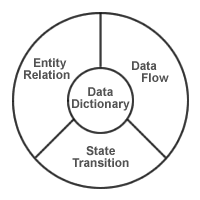

Home >> Requirements
Contents
- What are Requirements?
- How to Find Requirements
- Diagrams & Structures Which Aid in Requirements
- Quality Assurance Tests of Requirements
- Further Reading
What are Requirements?
Definition: A function which the software will perform expressed in an objective form. Requirements must be testable.
| A requirement is objective AND testable. |
Note: in a rigorous environment a requirement is traceable to capabilities.
Back to topHow to Find Requirements
- Interviews
- Questionaires
- Information Analysis and Modelling
- Observation - including documents
- Role Playing
Diagrams & Structures Which Aid in Requirements

Back to top
Quality Assurance Tests of Requirements
- Is there an Information Model of the proposed system? Do the requirements match the model?
- Are all inputs, outputs, and processes accounted for?
- Does every requirement trace to a capability and does every capability trace to a requirement?
- Does every requirement trace to a test and all tests trace to requirements?
- Is the system context described?
- Is the system architecture defined?
- Does the development environment and Configuration Management plan suit the proposed system?
Further Reading
- Conger, Sue A. The New Software Engineering. Eg. 3-1, pp. 207-208.
- Conger, Sue A. The New Software Engineering. Eg. 3-5, p. 219.
- Conger, Sue A. The New Software Engineering. Eg. 7-1, p. 236.
- Van Vliet, Hans. Software Engineering: Principles and Practice, Second Edition. pp. 205-208.